Del aldrig personlige oplysninger, som dit fulde navn, din adresse eller private billeder, med en chatbot, hvis du ikke ved, hvad den bruger dine data til (Datatilsynet, 2025).
Det er værd at huske, at en chatbot ikke er en ven eller et menneske, selvom den kan svare venligt og personligt. Der ligger programmeringsmæssige valg bag hvert svar, den giver (Børns Vilkår, u.å.).
Det er helt normalt, hvis det kan føles underligt eller ubehageligt at snakke med en chatbot om personlige ting. Det er ikke noget at skamme sig over, men det er godt at være bevidst om det (Børns Vilkår, u.å.).
Kilder
- Børns Vilkår (u.å.). AI-chatbots. Vores Fagunivers. https://fagunivers.bornsvilkar.dk/ai-chatbots/
- Datatilsynet (2025). Børn, unge og AI. Hvad du bør vide. https://www.datatilsynet.dk/presse-og-nyheder/nyhedsarkiv/2025/dec/boern-unge-og-ai-hvad-du-boer-vide